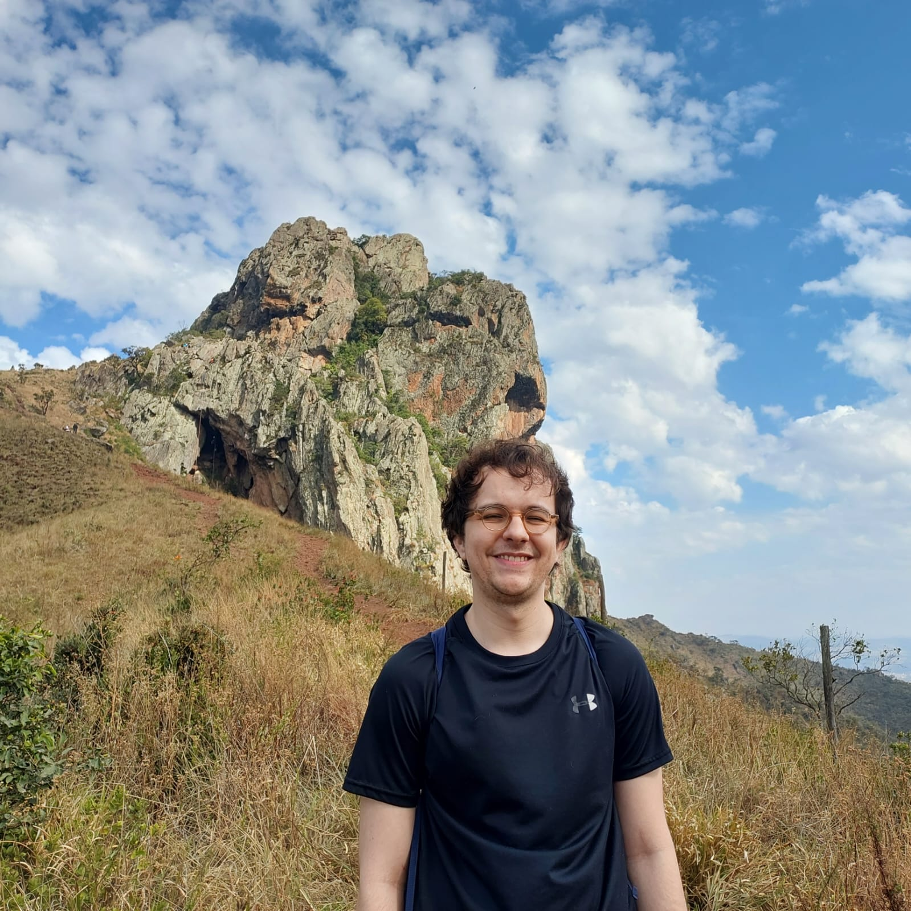
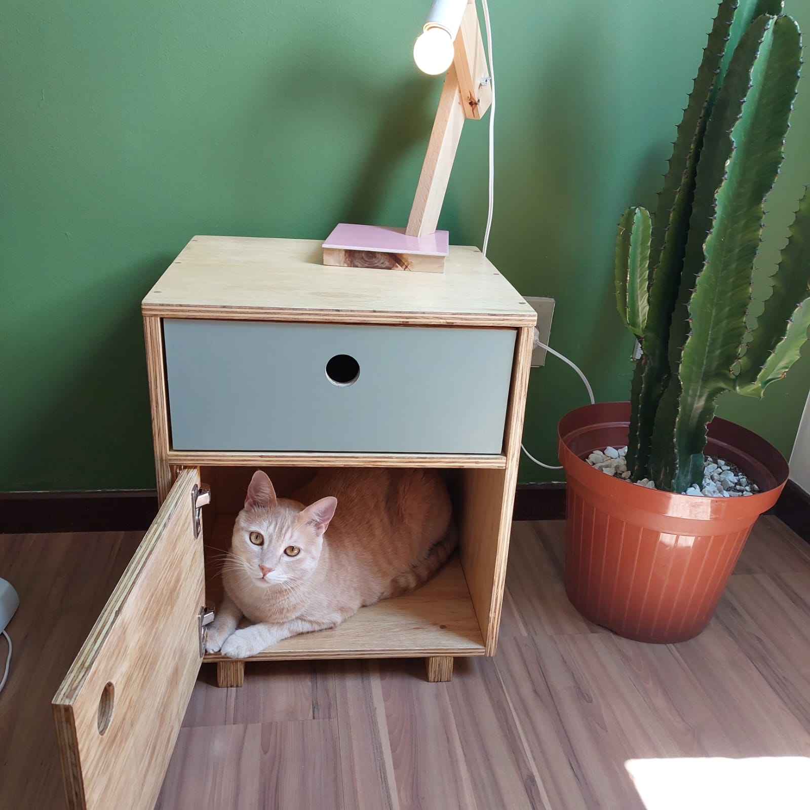

About
Hello! I’m Luís1.
1 
I’m a statistician and data scientist – my goal is to help people make better decisions under uncertainty. To achieve this, I design experiments, model causal relationships, estimate probabilities, and more.
I also enjoy hiking, music, and woodworking. I live with my partner and our ginger cat2 in Belo Horizonte, Brazil.
2 
Blog
Jan 23, 2024 Additive aging curve
Sep 21, 2023 Drafting a fantasy football team
No matching items